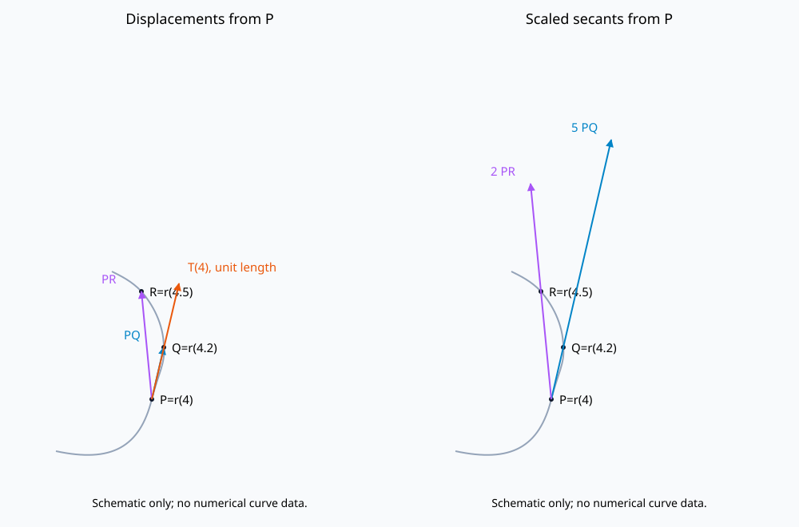

문제 요약
그림의 P=r(4),Q=r(4.2),R=r(4.5)에 대해(a)두 변위,(b)각 변위를0.2와0.5로 나눈 벡터를 그려라. (c)r′(4),T(4)를 극한으로 표현하고(d)T(4)를 그려라.

힌트. 정의와 주어진 조건을 식으로 옮겨 단계별로 계산한다.
해설.
(a)변위는 P에서Q로, P에서R로 향한다. (b)PQ를5배, PR을2배 하되 시작점은P로 둔다.
\(r'(4)=\lim_{h\to0}\frac{r(4+h)-r(4)}h,\quad T(4)=\frac{r'(4)}{|r'(4)|}\)
(d)P에서 t가 증가하는 쪽(Q,R쪽)으로 향하는 접선 위의 길이1벡터를 그린다. 수치 성분은 이 개형만으로 정확히 정할 수 없다.
최종 답. \(\overrightarrow{PQ},\ \overrightarrow{PR};\quad5\overrightarrow{PQ},\ 2\overrightarrow{PR}\); T(4)는 진행 방향 단위접선.
검산·주의점. 성분별 미분·대입과 원래 조건을 비교하거나 사용한 항등식을 전개하여 확인했다.
Problem summary
The figure marks P=r(4),Q=r(4.2),R=r(4.5). (a)Draw the displacements. (b)Draw each divided by0.2 or0.5. (c)Express r′(4),T(4)by limits and(d)draw T(4).
Hint. Translate the definitions and conditions into equations, then work through them.
Solution.
(a)The displacements run from P to Q and P to R. (b)Draw5PQ and2PR with tail at P.
\(r'(4)=\lim_{h\to0}\frac{r(4+h)-r(4)}h,\quad T(4)=\frac{r'(4)}{|r'(4)|}\)
(d)Draw a unit vector tangent at P toward increasing t, toward Q and R. The schematic does not determine exact numerical components.
Final answer. \(\overrightarrow{PQ},\ \overrightarrow{PR};\quad5\overrightarrow{PQ},\ 2\overrightarrow{PR}\); T(4)is the forward unit tangent.
Check and conditions. Checked by component differentiation/substitution against the original conditions or expansion of the stated identity.